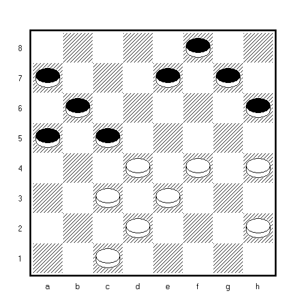

Обзор партий от Евгения Кондраченко
Д. Немец – Е. Кондраченко, 1 тур
В партии было 17.fe5 ed6 =
Интересные осложнения возможны после 17.cb2 ef6?
( Можно 17…gf6 18. fe5! cb4! 19. e:g7 ef6! –
но не 19…ba3? 20. gh8 a:c1 21. ef4! c:c5 22. cd4 Х –
- g:e5 ba3 21. ef6 a:c1 22. fg7 hg5 23. h:f6 f:h6 24. fe7 bc5 25. d:b6 a:c5,
с ловушкой 26. cd4? ab4! 27. d:b6 bc3 Х )
18.ba3?
( Выигрывало 18. hg3! fe7 19. fe5 и на 19…ed6 20. e:c7 b:d8
- d:b6 a:c5/с7 22. gf4 Х, а после 19…cb4 20. ed6! e:c5 21. ba3 hg5
- gf4 gh6 23. fe5 Х )
18…fe7 19.fe5 ab4! 20.c:c7 ed6 21.d:b6
21…f:f2 22.c:e5 a:c5 Х
Е. Кондраченко – Д. Немец, 1 тур
В партии было 7.ab2! bc5 ( Ловушка после 7…hg7? 8. de5 f:d4
- c:c7 b:d8 10. ab4! a:a1 11. cb2 Х; В случае 7…de5 8. f:d6 e:c5
- fg3 gh4? было заготовлено 10. ed2! h:f2 11. ab4 c:a3 12. dc5 b:d4
- c:g7 h:f6 14. dc3 f:d4 15. c:g7 Х ) 8.d:b6 a:c7 9.ab4! gh4
( Опять ловушка на 9…de5 10. f:d6 e:a3? 11. cb4! a:c5 12. ef4 Х )
10.ba5 с известной позицией из «Городской партии» с преимуществом белых.
В исходной позиции проигрывает 7.cb2? bc7!! Феноменально!
8.fg3 ( 8.ed2 dc5 X; 8.ab4 bc5! 9.dd8 de5 X ) 8…gh4 9.ab4 h:f2 10.e:g3 hg5! 11.f:h6 fe5! 12.d:d8 fg7 13.h:c5 b:h4 14.d:b6 a:c1 Х, анализ С. Смайдриса, 1987.
Известна такая старая позиция:
П. Шклудов, 1984 – НИЧЬЯ – 1.dc7 ( 1.hg7?? fe5 X ) 1…fe5! 2.hg7!! = Изящно.
И. Михальченко – А. Куница, 1 тур
a3a5 f6g5 1. gf4 gf6 2. cd4 bc5 3. d:b6 a:c5 4. bc3 cb4 5. fg3 fe5
- gh4 e:g3 7. h:f6 e:g5 8. h:f4 de5 9. f:d6 c:e5 10. ed4 ef4 11. ab6 ba3
- ba7 dc7 13. dc5 hg7 14. cb4 gf6 15. ba5 cd6 16. c:e7 f:d8 17. ab6 gh4
- bc7 d:b6 19. a:c5 fe7 20. gh2 ef6 21. ef2 fg5 22. fe3 bc7 23. ed4 hg3
- cb2 a:e3 25. d:f6 fe3 26. fe7 cd6 27. ed8 d:b4 28. da5 ba3 29. ae1 hg5
- ea5 gh4 31. ac3, и узнаю брата Колю))
А. Валюк – М. Семенюк, 2 тур
Отличный учебный пример использования отсталых шашек:
1…fe5 ( 1…dc5 2.cb2 X; 1…bc5 2.cd2 fe5 3.de3 eg3 4.hf2 hg5 5.fg3 de5
6.gh4 ef4 7.hf6 fb4 8.ed2 X ) 2. ef2! eb4 3.ae7 bc5 4.ed8 cd4 5.de7! X
Изящный маневр белых на 2-м ходу напомнил мне такой красивый фрагмент из партии И. Мартынова:
1. ed4! eg3 2.ef2 ge1 3.de3 eb4 4.ae7 ab4 5.ef8 ba3 6. fb4! X
В. Анисько – В. Беляевский, 2 тур
Ранее позиция встречалась в партии Е. Кондраченко – О. Холин, 2004
14…gh6? ( Программа «ТОША» показывает ничью после 14…ed4!! )
15.bc3 gf4 16.eg5 hf4 17.ef2 cd4 18.bc5! db6 19.cd4 Х
Упорнее было 15…cd4 16.ec5 ba7 17.ef2 cb6 ( 17…gf4 18. de3 f:d2
- c:e1 hg5 20. ed2 cb6 21. a:c7 d:d4 22. de3 gf4 23. e:c5 fe3
- f:d4 e:a5 25. gf4 Х ) 18.ac7 db2 19.ac1 ab6 ( 19…gf4 20. cb2 ab6 21. ba3 Х ) Известная позиция из партии Н. Сретенский – В. Каплан, 1953
с переменой цветов. 20.dc3! bc5 ( 20…gf4 21. ba5 bc5 22. ab6 c:a7
- hg5! f:h4 24. cd4 Х ) 21.fe3! ca3 22.gf4 eg3 23.hf4 dc5 24.cd4 cb4
25. cb2! ac1 Идея В. Сокова 26.de5 ff2 27.hd8 cg5 28.da5 Х
А. Плакхин – И. Михальченко, 2 тур
В партии было 1…eh4? = Программа показала, что выигрыш всё же был:
1… fe3! 2. hg3 e:h4 3. cd2 e:c1 4. ab8 dc5 5. b:d4 hd8! 6. be5 ab2
- eg7 ( 7.eh8 ce3 X ) 7…cg5! 8. ge5 ( 8.gf8 gh6 X; 8.gh6 bc1 X )
8…gh6! 9. eh8 he3 10. d:f2 ba1 Х
И. Михальченко – Е. Кондраченко, 3 тур
Черные атакуют: 12…cb6! 13. ba5 fg7! 14. a:e5 f:f2 15. e:g3 gf6!
Старый мотив из концовки дедушки Коврижкина. К сожалению, выигрыша
нет – 16. bc3 bc7 ( 16…dc7 17. cb4 cd4 18. hg5! f:f2 19. g:c5 hg1
- fg5 g:a7 21. gh6! cd6 22. hg7 ad4! 23. bc5! = ) 17. cb4 cd4 18. ba5!
( Уже нельзя 18. hg5? f:f2 19. g:c5 hg1 20. fg5 g:b6! 21. gh6 ba5! 22. bc5 cd6 X )
18…dc3 ( Но не 18…cb6?? 19. a:c7 d:b6 20. hg5! f:f2 21. g:a7 hg1 22. fe5 X )
- ab4 cb2 20. bc5 bc1 21. cd6! c:e5 22. f:d6 h:f4 23. dc7 d:b6 24. a:c7 fe3
( «Детская» идейка есть на 24…cd2 25.cb8 fe3 26.ba7?? fg5! X )
- hg5 f:h4 26. cb8 cb2 27. ba7 =
В. Анисько – Е. Кондраченко, 5 тур
Обманчивая позиция.
Черные надеялись на изящную ловушку после 8. gf4? e:g3 9. h:f4 fe5
- hg5? e:g3 11. ef4 g:e5 12. gf6 ba7! 13. f:h8 ab2! 14. c:a3 dc5 X
Однако последовал «мат» в 1 ход:
- ab2! И черным не отойти от форсажа после 8…bc5 9. gf4 e:g3
- h:f4 fe5 11. gh2 e:g3 12. h:f4 gf6 13. cd4 ba7 14. d:b6 a:c5
- bc3 fe5 16. cb4 e:g3 17. h:f2 de7 18. dc3! cd4! 19. e:c5 hg5
- fe3! Х ( Но не 20.cd4?? ef6! X )
Е. Кондраченко – А. Куница, 6 тур
В партии было 8…bc5; Изящный маневр был заготовлен
в случае 8…hg5 9. gh4 de5 10. fg3 ef4? 11. g:e5 bc5 12. d:b6 f:b2
( Или 12…ff2 ) 13. h:f6 a:c7 14. a:c3 g:e5 15. cb4! a:c5 16. ed4 X
А. Плакхин – Е. Кондраченко, 7 тур

20.dc3? Последняя ловушка сработала: 20… fg5! Жертва 21.fh6 cd6
22.hg7 Контржертва 22…fh6 23.gf4 hg5! КОНДРжертва ) 24.fh6 ef6 X
В. Новиков – Е. Кондраченко, 9 тур
На 14. ba3? был заготовлен свежий мотивчик 14…ef6! 15. g:e7 gf6
- e:g5 fg7 17. h:f8 ef4 18. g:c7 b:d8 19. f:b4 a:f6 Х
В партии было 14. gf6! e:g5 15. h:f4 gh6? и оба соперника
не заметили «мат» в 1 ход после 16. bc3! fe7/fg7 17. fg5! h:h2 18. ed4 X –
ук. И. Михальченко, а после 16. gh2? ab4! уже четкая ничья:
- fg5 h:f4 18. e:g5 bc3! 19. d:b4 c:a3 20. fe3 dc5! 21. gf4 e:g3 22. h:f4 cd4 =
Е. Кондраченко – В. Новиков, 9 тур
Анализируя партию Е. Кондраченко – В. Новиков, 9 тур
я нашел свежую идею:

1. cd4!! ce3 ( 1…ag3 2.fd8 X; 1…ge3 2.cb2 ae5 3.fd8 X ) 2.fd2 ac3 3.hf4 X
Е. Кондраченко – М. Семенюк, 10 тур
17…ed6?! ( В. Литвинович рекомендовал 17…cd6 18.ba5 bc5
и нельзя 19.ab4? ca3 20.ab6 gf4! 21.bc7 – ход 21.cb2 ведь невозможен! ) –
21…hg3! 22.fh4 fe3 23.df4 eg3 24.ce5 ef6 Х;
В ответ на 17…cd6 я собирался играть 18.hg3! gf6 19.ba5 bc7
20.cd4 ec3 21.db4 de5 22.fe3! hd4 23.bc5, кроме того, была еще ловушка
после 18.hg3 bc7? 19.gf4! eg3 20.cd4 ba5 21.de3! ae5 22.ef4 Х )
- ba5 bc5 19. cb4 gf4! ( 19…gf6? 20.de3!, и на 20…ef4 21.hg3! X,
а на 20…ed4 в «абациевском» стиле 21.ef4! ge3 22.cb2! X )
- dc3 hg5? ( Еще можно было 20…cd4! 21.cd2 db2 22.ac1 fg3 )
- cd4 e:c3 22. b:d2 gh6 23. dc3 de5 24. cb2! ba7 ( 24…cd6 25.ab6 ca7 26.fe3 X; 24…cb6 25.ac7 bd6 26.cb4 fg3 27.hf4 eg3 28.bc3 gh2 29.ba5 X )
- cb4 cd6 26. ab6! ( 26.fg3? hf2 27.eg3 fe3! = ) 26…cd4 27. ba5
( Но не 27.bc7? db8 28.fg3 hf2 29.gc5 ab6! 30.ca7 fe3 = ) 27…a:c5 28. ab6 c:a7
- fg3 h:f2 30. g:e7 fe3 31. ed8 gh4 32. da5 hg5 ( 32…ef2 33.eg3 hf2 34.hg3 fh4 35.ac7 ed4 36.bc3 X ) 33. ac3! ef4 ( 33…ed2 34.cf6! X ) 34. cb4 ab6 35. b2c3 Х